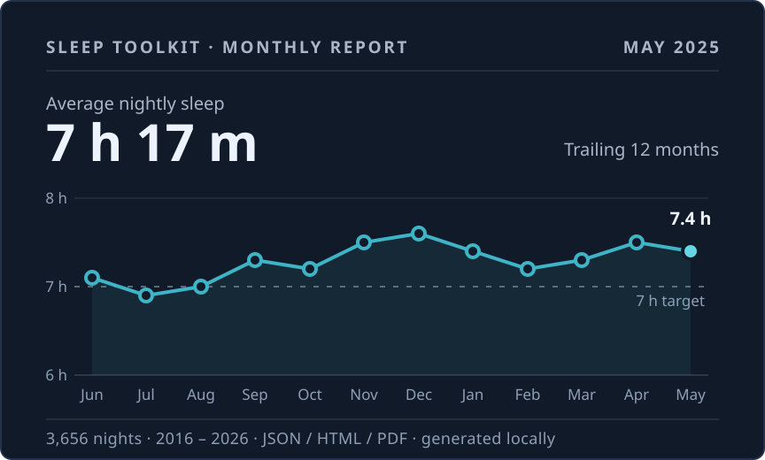

Sleep Toolkit
From raw records to readable reports.A maintained public tool. Upload one CSV and get structured JSON, an interactive report, and a PDF. The CLI can run entirely locally.

Report preview · May 20253,656nights, 2016 — 2026
One cell per night, one row per year (illustrative layout of the total count).- 3,656
- nights in the author’s own record
- 10
- years of data
- 3
- outputs per upload
One SleepCycle export — built for records that run for years.
Nights are read, normalized, and summarized into long-term patterns.
Structured data you can keep, diff, or feed to other tools.
An interactive report you can read in the browser.
A downloadable copy for keeping or sharing.
- 0:00CSV uploaded
- 0:01Report generated
- 0:01CSV deleted
- +1 hTemporary report expires after last access
Or skip the upload: the CLI runs entirely on your machine.
 The data essay
The data essay
ChangelogFrom the project’s commit history
- v1.0.1 · 2026-05-08PDF export no longer runs out of memory
- v1.0.0 · 2026-05-06Public web app: upload a CSV, get a report and a PDF
- 2026-04-23Powers the ten-year data essay
- 2026-03-20Pipeline: CSV to JSON and an HTML report